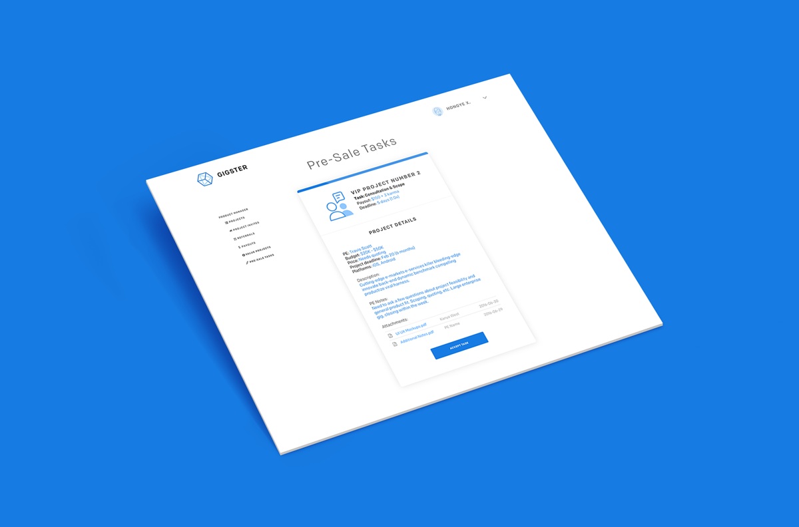

Gigster is a smart software development service, combining top developers and designers with artificial intelligence.
Over Summer '16, I worked at Gigster doing some neat product stuff. Some of it is very internal - I'd be happy to talk more about these in person if you drop me a line!
I was extremely excited by the opportunity to apply a smorgasbord of different skills and make a lasting impact on a rapidly growing startup (listed as one of the best to join in the country!) - most of the work I did over the summer is still in use to date.
Gigster is backed by Andreessen Horowitz, Greylock Partners, SVAngel and Y Combinator (S15). It was listed as one of the best early stage startups to join in the Breakout List (end of 2015).
I made this in After Effects as part of the rebrand effort.
Role
I made this too!
I came in as a fresh set of eyes to evaluate the internal processes of the company and how things were run - basically a product-minded problem solver.
To give you the short run-down, what Gigster does is source a team for software development (consisting of a product manager, a designer and one or more engineers) from a vetted pool of top-tier talent, optimized via machine learning.
I also made some cool visual assets like animations you see here, and helped trial some colour combinations as we moved to a flatter, monochrome logotype as well as gradient-based lockups.

An internal tool I made. Believe it or not, this little screen ended up doing a world of good!
Although I can't go into detail about the projects I worked on, I'd be happy to discuss the highlights and takeaways of my time at Gigster.